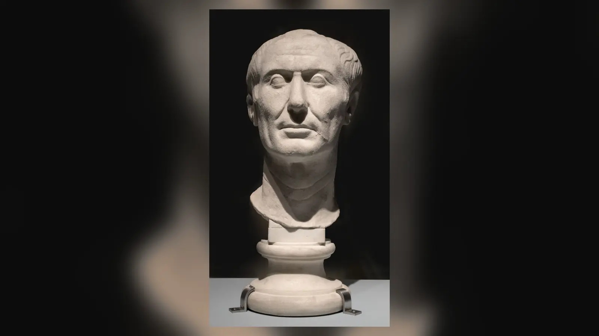
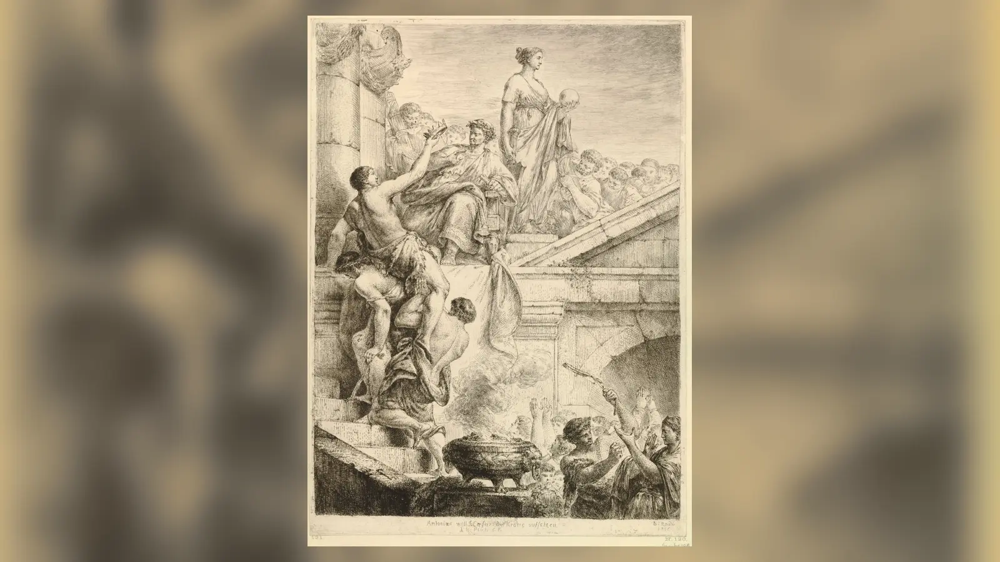
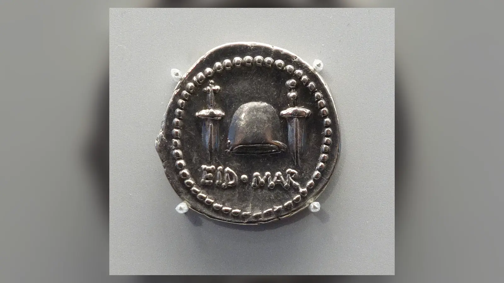

15 Mart MÖ 44 sabahı Julius Caesar, Roma’daki Pompeius Tiyatrosu kompleksinde yapılacak senato toplantısına doğru ilerlerken kendisini bekleyen tehlikenin büyüklüğünü bilmiyordu. Toplantı başladığında çevresini dilekçe sunuyormuş gibi yaklaşan senatörler sardı. Birkaç dakika içinde Roma’nın en güçlü adamı, kısa süre önce dictator perpetuo ilan edilmiş Caesar, kendi siyasi sınıfından gelen bir grubun bıçak darbeleriyle yere yığıldı. Suikastın görüntüsü o kadar güçlüydü ki iki bin yıl boyunca olay çoğu kez Brutus’un ihaneti ve “Et tu, Brute?” sözü üzerinden anlatıldı. Oysa tarihsel açıdan asıl mesele Caesar’ı kimin bıçakladığından çok, Roma’nın önde gelen senatörlerinden onlarcasının neden böylesine tehlikeli bir girişime katıldığıdır.
Julius Caesar neden öldürüldü? Çünkü yıllar süren iç savaşların ardından Roma’daki askerî ve siyasi güç olağanüstü ölçüde onun elinde toplanmıştı. Caesar Cumhuriyet’in kurumlarını bir gecede ortadan kaldırmamıştı; senato, magistralıklar ve halk meclisleri varlığını sürdürüyordu. Fakat karar alma gücü giderek Caesar’ın şahsına bağlanıyor, senatörlerin makam ve prestijleri onun tercihleriyle şekilleniyor, kendisine verilen sıra dışı onurlar geleneksel Cumhuriyet düzeninin kalıcı biçimde değiştiği izlenimini güçlendiriyordu. MÖ 44’te sürekli ya da ömür boyu diktatör ilan edilmesi, Roma’nın krallık karşıtı siyasi kültüründe özellikle tehlikeli görüldü. Lupercalia’da Marcus Antonius’un sunduğu diademi reddetmesine rağmen “Caesar kral olmak mı istiyordu?” kuşkusu ortadan kalkmadı.
Fakat suikastı yalnızca Cumhuriyet’i kurtarmaya çalışan idealistlerin eylemi gibi görmek de yanlıştır. Brutus, Cassius, Decimus Brutus ve diğer komplocular aynı nedenlerle hareket etmiyordu. Cumhuriyetçi ilkeler, aristokratların siyasi etkilerini kaybetme korkusu, Caesar’a kişisel bağımlılık duygusu, makam rekabetleri, kırgınlıklar ve yaklaşan Part seferinden önce harekete geçme zorunluluğu iç içe geçti. Türkçede sıkça sorulan biçimiyle “Jül Sezar neden öldürüldü?” sorusunun en doğru cevabı bu nedenle tek kelimelik değildir: Caesar, Cumhuriyet’in eski güç dengesini kendi şahsı çevresinde yeniden kurduğu ve bunun kalıcı bir monarşik düzene dönüşebileceği korkusunu yarattığı için hedef oldu; fakat onu öldürenlerin siyasi idealleri kadar kişisel çıkarları da bu kararda rol oynadı.
Julius Caesar Kimdi ve Roma’da Nasıl Güç Kazandı?
Gaius Julius Caesar MÖ 100’de eski ve soylu bir patrici ailesi olan Julii içinde doğdu. Ailesinin aristokrat kökeni ona prestij sağlıyordu, fakat genç Caesar Roma’nın en güçlü ve zengin adamlarından biri olarak hayata başlamadı. Siyasi kariyerini kurarken halk meclisleriyle ilişki kuran, modern tarih yazımında populares çizgisiyle ilişkilendirilen siyaset tarzından yararlandı; gösterişli kamu etkinlikleri, borçlanma, ittifaklar ve güçlü patronlarla ilişkiler onun yükselişinde önemliydi. MÖ 60 civarında Pompeius ve Marcus Licinius Crassus ile kurduğu gayriresmî siyasi ittifak, sonradan “Birinci Triumvirlik” adıyla anıldı. Bu resmi bir üçlü yönetim makamı değildi; üç güçlü siyasetçinin birbirlerinin hedeflerini desteklediği çıkar ortaklığıydı.
Caesar’ın gücünü olağanüstü seviyeye çıkaran gelişme Galya’daki uzun askerî komutanlığı oldu. MÖ 58’den itibaren yürüttüğü savaşlar ona yalnızca fetih ve servet değil, yıllarca kendi komutası altında savaşmış tecrübeli lejyonlar ve büyük askerî itibar kazandırdı. Roma Cumhuriyeti’nde zafer kazanmış generallerin askerleriyle kurduğu bağ yeni değildi, ancak geç Cumhuriyet’in rekabetçi ortamında böylesine büyük bir askerî sermaye siyaset açısından belirleyiciydi. Caesar aynı zamanda Galya savaşlarını kendi kaleme aldığı anlatılarla Roma kamuoyuna sundu; başarıları siyasi kimliğinin merkezine yerleşti.
Crassus’un MÖ 53’te Carrhae’de ölmesi ve Pompeius ile Caesar arasındaki bağların zayıflaması eski ittifakın dengesini bozdu. Roma’daki siyasi gerilim, Caesar’ın Galya’daki komutanlığının sona ermesiyle ne olacağı sorusunda yoğunlaştı. Caesar görevden ayrılıp özel vatandaş statüsüne dönerse siyasi rakiplerinin kovuşturmasına açık hâle gelebilirdi. Pompeius ise senatodaki Caesar karşıtı çevrelere giderek yaklaştı. Böylece başlangıçta anayasal ve kişisel bir makam mücadelesi olan kriz, iki büyük askerî-siyasi güç merkezinin çatışmasına dönüştü.
Caesar’ın daha sonraki diktatörlüğünü yalnızca sınırsız kişisel hırsın kaçınılmaz sonucu gibi okumak bu sürecin karmaşıklığını siler. Geç Cumhuriyet zaten MÖ 44’ten önce şiddet, olağanüstü komutanlıklar, sokak çatışmaları ve iç savaşlarla sarsılmıştı. Sulla’nın diktatörlüğü, Marius ile Sulla arasındaki mücadeleler, Pompeius’a verilen olağanüstü yetkiler ve senatör aristokrasisinin kendi içindeki rekabetler sistemin kırılganlığını göstermişti. Caesar bu krizi yaratmış tek kişi değildi; fakat Galya’dan döndüğünde elindeki askerî güçle krizi daha önce görülmemiş bir sonuca taşıdı.

Rubicon’un Geçilmesi ve İç Savaş
MÖ 49 başında Caesar’ın önündeki sorun yalnızca siyasi kariyerinin devam edip etmeyeceği değildi. Senatodaki rakipleri onun askerî komutadan çekilmesini istiyor, Caesar ise kendisiyle Pompeius’un güçlerini eş zamanlı bırakması gibi çözümler arıyordu. Görüşmeler başarısız olunca senato olağanüstü önlemler aldı. Caesar’ın prokonsüler yetki alanı ile İtalya arasındaki sınırı oluşturan Rubicon’u silahlı birliklerle geçmesi, bir Roma komutanının ordusunu meşru eyalet komutasının dışına taşıması anlamına geliyordu. Bu nedenle MÖ 49’daki geçiş, geri dönüşü zor bir iç savaş adımıydı.
Caesar’ın Rubicon’u geçerken söylediği meşhur “zarlar atıldı” sözünün aktarımı da ihtiyat gerektirir. Suetonius Latince iacta alea est biçimini aktarırken Plutarkhos, Caesar’ın Yunanca bir deyiş kullandığını bildirir. Olayın kendisi tarihsel olarak merkezi önemdedir; fakat sahnenin yüzyıllar sonra kaydedilen dramatik sözlerini kelimesi kelimesine tutanak gibi görmek doğru değildir. Caesar’ın ordusuyla İtalya’ya girmesi Pompeius ve birçok senatörün Roma’dan çekilmesine yol açtı. İtalya hızla Caesar’ın kontrolüne geçti ve mücadele imparatorluğun farklı bölgelerine yayıldı.
MÖ 48’de Pharsalos’ta Pompeius’un yenilmesi Caesar’ın en büyük rakibini askerî olarak saf dışı bıraktı. Pompeius Mısır’a kaçtı, ancak orada Ptolemaios XIII’ün çevresindeki yöneticiler tarafından öldürüldü. Caesar daha sonra Mısır’daki hanedan savaşına müdahil oldu ve Kleopatra ile ittifak kurdu; ardından Pontus’ta Pharnakes’e karşı savaştı. Afrika’daki Pompeiusçu güçlerin MÖ 46’da Thapsus’ta, İspanya’daki son büyük direnişin ise MÖ 45’te Munda’da yenilmesiyle Caesar’ın karşısında eşdeğer bir askerî rakip kalmadı.
İşte suikastın siyasi zemini burada oluştu. Cumhuriyetin geleneksel mekanizmaları, rakip aristokratların birbirini seçimler, senato tartışmaları ve geçici ittifaklarla dengelemesine dayanıyordu. Caesar ise iç savaşı kazanarak bu rekabetin üzerinde bir konuma yükseldi. Onu görevden uzaklaştırabilecek sıradan bir seçim yenilgisi veya senato oylaması artık gerçekçi görünmüyordu. Komplocuların bir bölümünün gözünde sorun Caesar’ın belirli bir kararından daha büyüktü: Roma’nın siyasi sisteminde Caesar’a denk bir karşı ağırlık kalmamıştı.
Caesar Diktatör müydü?
Caesar’ın “diktatör” olması modern okuyucuda doğrudan otoriter bir rejim çağrışımı yaratır, ancak Roma Cumhuriyeti’ndeki dictator makamı başlangıçta anayasal bir olağanüstü görevdi. Büyük bir askerî veya siyasi kriz sırasında belirli bir görevi yerine getirmek üzere olağan magistralardan daha geniş yetkilerle bir diktatör atanabiliyor, geleneksel biçiminde görev süresi genellikle altı ayı aşmıyordu. Dolayısıyla “Caesar diktatördü” cümlesi doğrudur; fakat kelimenin modern anlamını doğrudan antik kuruma taşımak yanıltıcıdır.
Caesar’ın durumu zamanla bu geleneksel çerçevenin çok ötesine geçti. İç savaş sırasında kısa süreli bir diktatörlük aldı; daha sonra yetkileri uzatıldı. MÖ 46’da on yıllık diktatörlük verilmesi zaten olağanüstüydü. MÖ 44 başında ise dictator perpetuo unvanı aldı. Latince ifadenin nüansları tartışılsa da siyasi etkisi açıktı: Caesar’ın diktatörlüğü artık kısa süreli bir acil durum makamı gibi görünmüyordu. Cumhuriyetçi seçkinler açısından olağanüstü yetkinin geçiciliğini sağlayan en önemli sınır ortadan kalkmıştı.
Caesar aynı zamanda konsüllük, başrahiplik ve başka yetkilerle siyasi sistemin merkezindeydi. Senato ona olağanüstü onurlar verdi. Bu onurların bir kısmı senatörlerin dalkavukluğu veya siyasi hesaplarıyla kabul edilmiş olsa da ortaya çıkan görüntü önemlidir. Caesar’ın heykelleri, özel koltuğu, zafer kıyafetleri ve kişisel onurları, onun sıradan bir magistradan farklı konumunu görünür hâle getiriyordu. Suikastçıların korktuğu şey yalnızca o gün Caesar’ın sahip olduğu yetkiler değil, bu düzenin normalleşmesiydi.
Bu nedenle “Caesar diktatör müydü?” sorusuna iki katmanlı cevap gerekir. Evet, Roma hukukundaki dictator makamını taşıdı; fakat bu makamın geleneksel geçici biçimini aşarak hayat boyu sürecek bir kişisel iktidara dönüştürdü. Yine de modern totaliter veya 20. yüzyıl diktatörlükleriyle bire bir özdeşleştirmek tarih dışı olur. MÖ 44’te komplocuların kullandığı temel siyasal kavram daha çok “tiranlık” korkusuydu: bir yurttaşın Cumhuriyet’in diğer seçkinleri üzerinde kalıcı ve hesap vermez üstünlük kurması.
Caesar Roma Cumhuriyeti’ni Ortadan mı Kaldırıyordu?
Caesar senatoyu kapatmadı, konsüllüğü kaldırmadı ve halk meclislerini feshetmedi. Bu nedenle MÖ 44 Roma’sını kurumların hukuken yok edildiği yeni bir monarşi olarak tanımlamak fazla kesin olur. Fakat kurumların varlığını sürdürmesi onların eski siyasi ağırlıklarını koruduğu anlamına gelmiyordu. İç savaştan zaferle çıkan Caesar, makamların dağıtımında ve siyasi kariyerlerin şekillenmesinde belirleyici hâle gelmişti. Bir senatörün geleceği giderek seçim rekabetinden çok Caesar’ın desteğine bağlı görünüyordu.
Senatonun üye sayısının Caesar döneminde ciddi biçimde artırılması da eski aristokrat çevrelerde rahatsızlık yarattı. Yeni üyelerin bir bölümü İtalya dışındaki elitlerden veya Caesar’a bağlı kişilerden geliyordu. Bu politika Roma yönetici sınıfını genişletmenin ve imparatorluğun farklı bölgelerini merkeze bağlamanın aracı olarak görülebilir; aynı zamanda eski senatoryal ailelerin kurum içindeki ayrıcalıklı ağırlığını azaltıyordu. Caesar’ın reformlarının tamamını “Cumhuriyet’i yok etme planı” olarak okumak kadar, bu reformların siyasi güç ilişkilerini değiştirmediğini söylemek de yanlıştır.
Caesar’ın affetme politikası bile iki anlam taşıyabiliyordu. Pompeius tarafında savaşmış Brutus ve Cassius gibi birçok kişi bağışlandı ve yeniden siyasi görevlere getirildi. Caesar bunu iç savaştan sonra uzlaşma kurmak için kullanmış olabilir. Fakat aristokrat onur kültürü içinde “affedilmiş olmak”, kişinin siyasi varlığının galibin merhametine bağlı olduğunu da hatırlatıyordu. Caesar’ın clementia’sı, onu bağışlayan üstün kişi; rakiplerini ise bağışlanmaya ihtiyaç duyan yenilmişler konumuna yerleştiriyordu.
Cumhuriyetçi sistemin özü yalnızca kurumların isimleri değildi; aristokratlar arasında makam, itibar ve auctoritas rekabetiydi. Caesar’ın rakipsizliği bu dengeyi bozdu. Senatörler hâlâ konuşabiliyor, makamlar hâlâ dağıtılıyor ve seçimler hâlâ yapılıyordu, fakat nihai güç ilişkisinin merkezinde Caesar vardı. Suikastı anlamak için komplocuların “Cumhuriyet ortadan kaldırıldı” diye nesnel bir hukuk tespiti yapmasından çok, Cumhuriyet içinde kendi siyasi özgürlüklerinin ve statülerinin anlamsızlaşacağına inanmalarını görmek gerekir.
Caesar Kral Olmak mı İstiyordu?
Roma siyasi kültüründe rex, yani kral kelimesi olağan bir unvan değildi. Cumhuriyet geleneği kendi kuruluş hikâyesini son kral Tarquinius Superbus’un kovulmasına bağlamıştı. Roma aristokrasisi için krallık, tek kişinin diğer yurttaşların üzerinde kalıcı hâkimiyet kurmasının tarihsel simgesiydi. Bu nedenle Caesar’ın resmen “kral” unvanını alıp almaması, sahip olduğu fiilî güçten bağımsız olarak son derece hassas bir meseleydi.
MÖ 44’teki Lupercalia festivali bu korkunun en ünlü sahnesini yarattı. Antik kaynakların ayrıntıları tam olarak aynı değildir, fakat ortak çerçevede Marcus Antonius halka açık biçimde Caesar’a bir diadem sundu ve Caesar bunu reddetti. Kalabalığın reddedişi alkışladığı aktarılır. Caesar’ın tacı reddetmesi, kral olmak istemediğinin kanıtı olarak okunabilir. Buna karşılık bazı çağdaş ve sonraki gözlemciler, bütün sahnenin halkın tepkisini ölçmek için düzenlenmiş olabileceğinden şüphelendi. Bu şüpheyi doğrulayacak kesin kanıt yoktur.
Caesar’a verilen başka onurlar da kuşkuyu büyüttü. Özel koltuk, zafer kıyafetleri, heykeller ve dinsel çağrışımı olan ayrıcalıklar onun geleneksel magistralardan ayrılan konumunu vurguluyordu. Senato heyeti kendisine geldiğinde ayağa kalkmaması gibi olaylar da aristokratlar tarafından küçümseme işareti olarak yorumlandı. Caesar’ın sağlık durumu veya olayın ayrıntıları hakkında farklı açıklamalar bulunsa da siyasi sonuç önemliydi: senatörler kendilerine eşit bir aristokrat yerine üstün bir hükümdar gibi davranan bir figür gördüklerini düşünebiliyordu.
Partlara karşı planlanan büyük sefer öncesinde Caesar’ın İtalya dışında “kral” unvanı alacağına ilişkin söylentiler de dolaşıyordu. Antik yazarlar Sibylla kitaplarına dayanarak Partların ancak bir kral tarafından yenilebileceği yönünde bir iddianın gündeme getirileceğini aktarır. Bunun gerçek bir siyasi plan mı, propaganda mı, yoksa suikast sonrasında büyütülmüş bir söylenti mi olduğunu kesin olarak bilemeyiz. Caesar’ın kral olmayı kesin biçimde planladığını söylemek kanıtların ötesine geçer.
Buradaki ayrım çok önemlidir: Caesar’ın gerçek niyeti ile senatörlerin Caesar’ın niyetinden korkması aynı şey değildir. Bir suikastın gerçekleşmesi için Caesar’ın gerçekten taç giymeye hazırlanması gerekmiyordu. Komplocuların bunun olabileceğine inanması veya böyle bir ihtimali kendi statüleri için kabul edilemez görmesi yeterliydi. Lupercalia’dan yalnızca bir ay sonra gelen suikast, krallık korkusunun MÖ 44 siyasi atmosferindeki gücünü gösterir.

Julius Caesar Neden Öldürüldü?
Julius Caesar suikastının merkezinde, Roma’daki gücün artık geçici bir askerî zaferin sonucu olmaktan çıkıp kalıcı bir kişisel düzene dönüşeceği korkusu vardı. İç savaş sona ermiş, Pompeius ölmüş, diğer büyük Pompeiusçu ordular yenilmişti. Caesar’ın karşısında onu dengeleyebilecek başka bir general veya siyasi blok kalmamıştı. Dictator perpetuo unvanı bu nedenle sembolik bir eşikti. Geleneksel diktatörlüğün en önemli özelliği geçiciliğiyken Caesar’ın makamı artık belirli bir krizin sona ermesiyle bırakılacak bir görev gibi görünmüyordu.
Krallık korkusu bu güç yoğunlaşmasına tarihsel bir dil verdi. Romalılar yüzlerce yıl boyunca Cumhuriyet’in kuruluşunu kralların kovulmasıyla ilişkilendirmişti. Caesar tacı reddetse bile kendisine verilen onurlar, kişisel üstünlüğü ve Lupercalia sahnesi, muhaliflerinin “bir sonraki adım ne olacak?” sorusunu sormasına neden oldu. Suikastçıların Caesar’ı kral ilan edilmiş olduğu için öldürdüğünü söylemek yanlış olur; Caesar hiçbir zaman Roma’da resmen rex olmadı. Fakat bir kralın sahip olacağı türden kalıcı üstünlüğün oluştuğunu düşündükleri açıktır.
Senatörlerin siyasi konum kaybı da ideolojik kaygılardan ayrı düşünülemez. Roma aristokrasisinde siyaset, yalnızca devleti yönetme görevi değil, aile onuru ve kişisel kimliğin temeliydi. Konsüllük, praetorluk, eyalet komutanlığı, zafer alayı ve senatodaki nüfuz nesiller boyunca rekabet edilen ödüllerdi. Caesar makamları ve gelecek görevleri önceden dağıtabildiğinde, aristokrat rekabeti onun onayına bağımlı hâle geliyordu. Caesar’ın kendilerine görev vermesi bazı senatörler için avantajdı; fakat aynı zamanda onların bağımsız auctoritas iddiasını zedeliyordu.
Affedilmiş eski düşmanların psikolojisi de burada önem kazanır. Caesar, Pompeius tarafında savaşmış birçok aristokratı bağışladı. Modern gözle bakıldığında bu olağanüstü bir uzlaşma politikası gibi görünebilir ve gerçekten de Sulla’nın kanlı tasfiyeleriyle karşılaştırıldığında daha yumuşaktı. Ancak Roma’nın eşitler arasındaki aristokratik rekabet kültüründe merhamet hiyerarşi yaratıyordu. Brutus veya Cassius gibi bir senatör hayatta kalmasını ve kariyerinin devamını Caesar’ın clementia’sına borçlu olduğunda, siyasi eşitlik iddiası yaralanabiliyordu. Affetme barış üretiyor ama aynı anda Caesar’ın üstünlüğünü görünür kılıyordu.
Caesar’ın senatoya karşı küçümseyici görünen bazı davranışları da birikmiş rahatsızlığı büyüttü. Senato heyetini oturarak karşılaması, tribünlerle yaşadığı çatışmalar ve kendisine verilen sıra dışı onurlar, tek tek bakıldığında suikast açıklaması değildir. Fakat Cumhuriyetçi elitin statü sembollerine olağanüstü önem verdiği bir toplumda bu davranışlar siyasi mesaj olarak okunuyordu. Caesar’ın niyeti her zaman aşağılamak olmayabilir; algılanan küçümseme de komplonun beslendiği atmosferin parçasıydı.
Komplocuların tamamını yüksek fikirli Cumhuriyetçiler olarak görmek ise kaynakların sunduğu tabloya uymaz. Cassius’un Caesar’la kişisel ve kariyer kaynaklı gerilimleri olduğu aktarılır. Bazı senatörlerin bekledikleri makamlara ulaşamaması, bazı eski Pompeiusçuların yenilmişlik duygusu ve aristokratlar arasındaki rekabet komplonun insan malzemesini oluşturuyordu. Antik siyasi kültürde “ilke” ile “kişisel çıkar” modern okuyucunun düşündüğü kadar kolay ayrılmazdı. Bir senatör kendi dignitas’ını savunurken bunu aynı zamanda Cumhuriyet’in özgürlüğünü savunmak olarak görebilirdi.
Brutus gibi isimlerde Cumhuriyetçi ideoloji daha görünürdür. Brutus’un ailesi, Roma’nın son kralını kovduğu kabul edilen Lucius Junius Brutus geleneğiyle ilişkilendiriliyordu. Bu tarihsel soy anlatısının ne kadar kesin olduğu ayrı bir meseledir; MÖ 44’teki siyasi sembolizmi ise gerçektir. Brutus’a atalarının görevini hatırlatan yazıların bırakıldığına ilişkin antik anlatılar, onun üzerindeki ideolojik baskının nasıl hatırlandığını gösterir. Brutus’un komploya katılması, suikastın yalnızca kişisel hesaplaşma değil “tiran öldürme” eylemi olarak sunulabilmesi için de değerliydi.
Zamanlama da belirleyiciydi. Caesar büyük bir Part seferine hazırlanıyordu ve Roma’dan ayrılması bekleniyordu. Başarılı bir doğu seferi ona yeni askerî şöhret, servet ve sadık birlikler kazandırabilirdi. Ayrıca uzun süre Roma dışında bulunması komplocular için harekete geçmeyi zorlaştırabilirdi. Antik kaynaklardaki kral söylentileri de Part seferi bağlamında yoğunlaşır. Dolayısıyla MÖ 44 Martı, muhalifler açısından fırsat penceresinin kapanmak üzere olduğu hissini yaratmış olabilir.
Julius Caesar neden öldürüldü sorusunun en sağlam cevabı bu nedenlerin kesişimindedir. Yetkilerin tek kişide toplanması olmadan kişisel kırgınlıkların büyük bir suikasta dönüşmesi zor olurdu; aristokratların statü kaygıları olmadan soyut Cumhuriyetçilik bu kadar geniş bir komplo üretmeyebilirdi; krallık korkusu olmadan Caesar’ın onurları aynı tehdit düzeyinde algılanmayabilirdi. Komplocuların ortak noktası aynı siyasi felsefeye sahip olmaları değil, Caesar hayatta kaldığı sürece kendi istedikleri Cumhuriyet düzeninin geri gelmeyeceğine inanmalarıydı.
Suikastı Kimler Planladı?
Antik kaynaklar komploya altmıştan fazla kişinin katıldığını aktarır; bu rakam modern bir üye listesi kesinliğinde ele alınmamalıdır. Daha sonraki gelenekte suikastçılar “Liberatores”, yani özgürleştiriciler olarak anıldı. Bu ad onların kendi eylemlerini nasıl meşrulaştırdığını da yansıtır: Caesar’ı meşru bir devlet başkanından çok tiran olarak tanımlarlarsa öldürme eylemi sıradan cinayet değil, Cumhuriyet’in özgürlüğünü geri getiren tyrannicidium olarak sunulabilirdi.
Komplonun en önemli isimlerinden Gaius Cassius Longinus tecrübeli bir asker ve siyasetçiydi. MÖ 53’te Carrhae felaketinden sonra Roma kuvvetlerinin bir bölümünü toparlamış, iç savaşta Pompeius tarafında yer almış, ardından Caesar tarafından bağışlanmıştı. Antik yazarlar Cassius’un Caesar’a karşı kişisel rahatsızlıklarını da vurgular. Fakat onu yalnızca kıskanç bir adam olarak göstermek de indirgemecidir; Cassius komplonun örgütlenmesinde merkezi bir aktördü ve Caesar’ın kalıcı üstünlüğüne siyasi olarak karşıydı.
Marcus Junius Brutus komploya ahlaki meşruiyet kazandıran isimdi. Cato’nun çevresiyle aile bağı, felsefi ilgileri ve Brutus adının krallık karşıtı Cumhuriyet geleneğindeki ağırlığı onu simgesel açıdan vazgeçilmez kılıyordu. Caesar’ın onu bağışlamış ve görevlendirmiş olması, sonraki edebiyatta Brutus’u ihanetin sembolüne dönüştürdü. Fakat MÖ 44 siyasetinde Brutus kendisini kişisel minnet ile Cumhuriyet’e karşı görev arasında seçim yapan bir aristokrat olarak görmüş olabilir.
Popüler anlatıda çok daha az tanınan Decimus Junius Brutus Albinus ise operasyonel açıdan son derece önemliydi. Decimus Caesar’ın eski komutanlarından ve güvenilir çevresinden biriydi; Galya savaşlarında hizmet etmiş, Caesar’ın vasiyetinde yedek mirasçılar arasında yer almış ve gelecekteki konsüllük için belirlenmişti. Caesar suikast sabahı Calpurnia’nın kaygıları nedeniyle senato toplantısına gitmekten vazgeçmeye yaklaşınca, antik anlatılara göre onu evden çıkmaya ikna eden kişi Decimus’tu. Bu ayrıntı, “Brutus” denildiğinde yalnızca Marcus Brutus’u hatırlamanın olayın önemli bir aktörünü görünmez kıldığını gösterir.
Gaius Trebonius’un görevi ise saldırı anında Marcus Antonius’u Caesar’dan ayırmaktı. Casca ilk darbeyle ilişkilendirilir; Tillius Cimber’in sürgündeki kardeşi için dilekçe sunması ise Caesar’ın çevresinde komplocuların toplanmasına bahane sağladı. İsimlerin hepsini sıralamak suikastı daha anlaşılır kılmaz. Önemli olan komplonun Caesar’ın eski düşmanlarıyla sınırlı olmamasıdır: onun tarafından affedilmiş Pompeiusçuların yanında, Caesar’la birlikte hizmet etmiş ve ondan önemli görevler almış adamlar da vardı.
Brutus Caesar’ı Neden Öldürdü?
Brutus’un kararı iki bin yıldır “ihanet” kelimesiyle anlatılır; fakat onun siyasi dünyasında mesele daha karmaşıktı. Brutus MÖ 49’daki iç savaşta Pompeius tarafını seçmişti. Bu seçim özellikle dikkat çekiciydi çünkü Pompeius geçmişte Brutus’un babasının ölümünden sorumlu tutuluyordu. Plutarkhos’un aktardığı gelenekte Brutus, kamusal çıkarı kişisel düşmanlığın önüne koyduğu için Pompeius cephesine geçmişti. Pharsalos yenilgisinden sonra Caesar tarafından affedildi ve kariyerine devam etmesine izin verildi.
Brutus’un amcası ve daha sonra kayınpederi olan Genç Cato, Caesar karşıtı Cumhuriyetçi direnişin en güçlü simgelerindendi. Cato’nun MÖ 46’da Utica’da intihar etmesi, Caesar’ın affını kabul etmeme iradesi olarak büyük sembolik değer kazandı. Brutus aynı zamanda Roma’nın son kralını kovduğu anlatılan Lucius Junius Brutus’un adıyla ilişkilendiriliyordu. Bu aile hafızası, onun MÖ 44’teki rolünü çağdaşları açısından sıradan bir senatörden farklı hâle getirdi.
Caesar ile Brutus’un annesi Servilia arasında uzun süreli bir ilişki bulunduğuna ilişkin antik kanıtlar vardır. Buradan hareketle Brutus’un Caesar’ın öz oğlu olduğu yönünde popüler bir iddia doğmuştur. Kronoloji bu iddiayı son derece zayıf kılar: Brutus MÖ 85 civarında doğmuştu ve Caesar o sırada yaklaşık on beş yaşındaydı; Servilia ile açıkça bilinen ilişki ise çok daha sonraki yıllarla bağlantılıdır. Antik söylentilerin varlığı tarihsel babalık kanıtı değildir.
Brutus Caesar’ı neden öldürdü? Cumhuriyetçi siyasi kimlik, aile geleneğinin yarattığı beklenti, Caesar’ın kalıcı üstünlüğüne duyduğu kaygı ve kendi aristokrat statüsü birbirine bağlanmış görünür. Caesar’ın kendisini bağışlamış olması Brutus’u otomatik olarak Caesar’a ömür boyu siyasi sadakat borçlu saymıyordu; Roma aristokratının kendi gözünde temel sadakati res publica’ya olabilirdi. Buna karşılık Brutus’un kendi kariyer çıkarlarından tamamen bağımsız, saf bir idealist olduğunu da kanıtlayamayız. Onun eylemini güçlü kılan tam olarak bu gerilimdir.
Suikast Planı Nasıl Hazırlandı?
Komplocuların Caesar’ı nerede ve nasıl öldüreceği dikkatle düşünülmüş görünür. Suetonius, Campus Martius’taki seçimler, kutsal yol veya tiyatro çevresi gibi farklı saldırı seçeneklerinin tartışıldığını aktarır. Bu ayrıntılar olaydan uzun süre sonra yazıya geçirilmiştir ve bütün planlama aşamalarını kesin tutanaklar gibi kabul etmek doğru olmaz. Yine de senato toplantısının seçilmesi siyasi mesaj açısından son derece anlamlıydı. Caesar bir evde gizlice öldürülmeyecek, Roma’nın yönetici seçkinlerinin toplandığı kamusal-siyasi bir ortamda öldürülecekti.
Cassius’un Marcus Antonius’un da öldürülmesini istediği, Brutus’un ise buna karşı çıktığı aktarılır. Brutus’un yaklaşımı suikastı bir tasfiye hareketinden ayırmayı amaçlıyor olabilir: hedef Caesar’ın çevresindeki bütün siyasi rakipleri yok etmek değil, “tiran” olduğu iddia edilen tek kişiyi ortadan kaldırmaktı. Böylece eylem Sulla tarzı bir kanlı hesaplaşma değil Cumhuriyet’in özgürleştirilmesi olarak sunulacaktı. Bu tercih kısa sürede stratejik bir hata olduğunu gösterecekti; Antonius hayatta kaldı ve Caesar’ın ölümünden sonra gelişen güç mücadelesinin merkezine yerleşti.
Komplocuların Caesar’ın yaklaşan Part seferinden önce davranması gerekiyordu. Roma’dan ayrıldıktan sonra ona erişmek daha zor olacak, yanında ordu bulunacak ve olası zaferler siyasi meşruiyetini daha da güçlendirecekti. 15 Mart’taki senato toplantısı hem Caesar’ın erişilebilir olduğu hem de saldırının Cumhuriyetçi bir siyasi anlam kazanabileceği bir fırsat sundu. Planın en ironik yanı, komplocuların cinayetin kendisini ayrıntılı biçimde düşünmüş olmalarına rağmen ertesi günün siyasi düzeni konusunda aynı netliğe sahip görünmemeleridir.
Mart’ın İdleri Nedir?
“Mart’ın İdleri” başlangıçta uğursuzluk anlamına gelmiyordu. Roma takviminde ayın günleri modern takvimdeki gibi birden başlayarak ardışık sayılarla ifade edilmiyordu. Kalendae ayın ilk gününü, Nonae belirli aylarda beşinci veya yedinci günü, Idus ise on üçüncü veya on beşinci günü gösteriyordu. Mart, Mayıs, Temmuz ve Ekim aylarında Ides ayın on beşine denk gelirdi. Dolayısıyla MÖ 44’te “Mart’ın İdleri” basitçe 15 Mart tarihiydi.
Caesar’ın o gün öldürülmesi bu sıradan takvim terimini Batı kültürünün en tanınmış uğursuz tarih ifadelerinden birine dönüştürdü. Shakespeare’in Julius Caesar oyunundaki “Beware the Ides of March” sözü bu dönüşümü kalıcılaştırdı. Ancak Roma takvimindeki “Ides” kavramının kendi başına felaket veya ölüm anlamı yoktu. Bugün “Mart’ın İdleri nedir?” sorusuna verilen cevap ile Shakespeare sonrası kültürel çağrışımı birbirinden ayırmak gerekir.
Caesar Suikast Uyarılarını Neden Dinlemedi?
Caesar’ın ölümünden önce aldığı uyarılar antik anlatının en dramatik bölümüdür. Kâhin Spurinna’nın Mart’ın İdleri konusunda onu uyardığı, Calpurnia’nın kötü bir rüya gördüğü, kurbanların uğursuz işaretler verdiği ve Artemidoros adlı bir kişinin komployu açıklayan yazılı uyarıyı Caesar’a ulaştırmaya çalıştığı aktarılır. Fakat bunların önemli bölümü Plutarkhos, Suetonius, Appianos ve Cassius Dio gibi olaydan onlarca yıl, hatta yaklaşık bir buçuk yüzyıl sonra yazan kaynaklarda bulunur. Antik tarih yazımında büyük kişilerin ölümünden önce görülen alametler yaygın bir edebî motiftir.
Bu nedenle Caesar’ın gerçekten her ayrıntısıyla ölümünü haber veren bir dizi doğaüstü uyarıyı “görmezden geldiğini” söylemek doğru değildir. Kaynakların ortaklaştığı daha tarihsel çekirdek, Caesar’ın o sabah toplantıya gitme konusunda tereddüt ettiği ve Decimus Brutus’un onu gitmeye ikna ettiğidir. Plutarkhos’a göre Decimus, senatörlerin Caesar’ın çağrısıyla toplandığını ve bir rüya yüzünden gönderilmelerinin onu küçük düşüreceğini söyleyerek Caesar’ın kararını değiştirdi.
Artemidoros’un mektubu ve Spurinna sahnesi doğru bir tarihsel hatıraya dayanıyor olabilir; fakat dramatik biçimlerinin ne ölçüde sonradan işlendiğini bilemeyiz. “İdler geldi” ve “geldi ama geçmedi” şeklindeki diyalog, antik biyografinin kader temasına kusursuz biçimde uyar. Tarihçi açısından önemli olan kehanetin gerçekleşmesi değil, sonraki kuşakların Caesar’ın ölümünü kaçınılmaz bir trajedi gibi anlatma eğilimidir.
15 Mart MÖ 44: Julius Caesar Nasıl Öldürüldü?
Senato o gün normal toplantı mekânı olan Curia Julia’da toplanmıyordu; yapı çalışmaları nedeniyle toplantı Pompeius Tiyatrosu kompleksindeki Pompeius Curia’sında yapıldı. Bu ayrıntı sık sık yanlış biçimde “Pompeius’un senato binası” diye basitleştirilir. Mekân, Pompeius’un büyük tiyatro kompleksinin parçası olan ve senato toplantıları için kullanılabilen bir curia idi. Caesar’ın yıllar önce iç savaşta yenilgiye uğrattığı Pompeius’un heykelinin bulunduğu çevrede ölmesi, antik yazarlar için güçlü bir tarihsel ironi yarattı.
Caesar geldiğinde komplocular plan gereği yakınına toplandı. Tillius Cimber sürgündeki kardeşinin geri çağrılması için dilekçe sundu. Caesar talebi reddettiğinde veya ertelediğinde Cimber onun togasını çekti; bu hareket saldırının işareti oldu. Casca’nın ilk darbeyi vurduğu aktarılır. Kaynaklar ilk yaranın tam yeri ve Caesar’ın verdiği tepkinin sözleri konusunda uyuşmaz. Bazı anlatılarda Caesar başlangıçta direnmeye çalışır; ardından çok sayıda saldırganın arasında hareket alanını kaybeder.
Marcus Antonius saldırı başlamadan önce Trebonius tarafından dışarıda tutulmuştu. Komplocular Caesar’ın etrafını öylesine sıkı çevreledi ki saldırı kaotik hâle geldi ve bazıları birbirlerini de yaraladı. Caesar’ın sonunda Pompeius heykelinin kaidesi yakınında yere düştüğü aktarılır. Plutarkhos, Caesar’ın Brutus’u da saldırganlar arasında görünce togasını başına çektiğini anlatır. Suetonius ise onun ilk tepki dışında ses çıkarmadan öldüğünü, yalnızca bazı yazarların Brutus’a Yunanca bir söz söylediğini aktardığını belirtir.
Julius Caesar nasıl öldü sorusunun kesin tarihsel çekirdeği nettir: senato toplantısı sırasında, kendisini dilekçe bahanesiyle çevreleyen senatörler tarafından topluca bıçaklanarak öldürüldü. Fakat sinema ve tiyatroda görülen her hareketin tarihsel olarak doğrulandığını düşünmemek gerekir. Elimizde olay anında tutulmuş bir adli kayıt yoktur; başlıca ayrıntılar daha sonraki antik anlatılardan gelir.
Julius Caesar Kaç Kez Bıçaklandı?
Suetonius’un anlatısına göre Caesar’ın bedeninde yirmi üç yara bulundu. Aynı kaynak, hekim Antistius’un bu yaralardan yalnızca birini ölümcül olarak değerlendirdiğini bildirir. Bu nedenle “Julius Caesar kaç kez bıçaklandı?” sorusuna genellikle 23 cevabı verilir. Ancak bu rakamı modern adli tıp raporundan alınmış tartışmasız veri gibi sunmak doğru değildir.
Antistius hakkındaki bilgi Suetonius üzerinden gelir ve Suetonius Caesar’ın ölümünden yaklaşık bir buçuk yüzyıl sonra yazmıştır. “Otopsi” kelimesi modern tıbbın sistematik ölüm sonrası incelemesini çağrıştırdığı için burada dikkatle kullanılmalıdır. Antik bir hekimin cesedi incelediğine ilişkin anlatı vardır; elimizde Antistius’un kendi raporu veya çağdaş tıbbi belge bulunmaz.
Yirmi üç yara anlatısı yine de antik geleneğin en güçlü ayrıntılarından biridir ve saldırının kolektif niteliğini yansıtır. Komplocular açısından çok sayıda kişinin darbeye katılması, cinayetin sorumluluğunu paylaşmanın da bir yolu olabilir. Caesar tek bir düelloda öldürülmedi; Roma’nın yönetici sınıfından bir grubun birlikte gerçekleştirdiği siyasi bir infaz görüntüsü yaratıldı.
Caesar’ın Son Sözleri “Et Tu, Brute?” miydi?
“Et tu, Brute?” yani kabaca “Sen de mi, Brutus?” sözü Julius Caesar’la özdeşleşmiştir, ancak bu cümleyi Caesar’ın tarihsel son sözü olarak kabul etmek için güvenilir kanıt yoktur. İfadenin bugünkü ünü büyük ölçüde Shakespeare’in Julius Caesar oyunundan gelir. Shakespeare MÖ 44 olaylarının çağdaşı değildi; oyun tarihsel kaynak değil, 16. yüzyıl sonunda yazılmış dramatik bir eserdir.
Suetonius, Caesar’ın ilk darbeye tepki verdiğini aktarır; ardından onun sessizce öldüğünü söyler. Bununla birlikte bazı kişilerin Caesar’ın Marcus Brutus’a Yunanca “kai su, teknon” dediğini yazdığını da kaydeder. İfade “sen de, çocuğum/oğlum” gibi çevrilebilir; fakat Suetonius bunu tartışmasız gerçek olarak benimsemez. Üstelik sözün anlamı da kesin değildir: şaşkınlık, lanet, kehanet veya retorik bir ifade olarak yorumlanmıştır.
Plutarkhos’un anlatısında ünlü “Et tu, Brute?” cümlesi yoktur. Caesar’ın Brutus’u saldırganlar arasında görünce direnmeyi bıraktığı ve giysisini başına çektiği anlatılır. Dolayısıyla Julius Caesar’ın son sözleri konusunda kesinlik mümkün değildir. Tarihsel olarak en güvenli sonuç, Shakespeare’in Latince cümlesinin antik bir tutanak olmadığı; “kai su, teknon” geleneğinin ise var olmakla birlikte doğrulanmış son söz sayılamayacağıdır.
Caesar’ın Reformları Komplocuları Neden Rahatsız Etti?
Caesar’ın son yıllarındaki reform programı, suikastın nedenlerini değerlendirirken iki zıt gerçeği aynı anda görmeyi gerektirir. Bir yandan Caesar yalnızca kendisine unvan toplayan bir komutan değildi; takvimden yerel yönetime, borç sorunlarından veteranların yerleştirilmesine kadar devletin işleyişini değiştiren düzenlemeler yapıyordu. MÖ 46’da yürürlüğe sokulan ve daha sonra Jülyen takvimi adıyla anılan takvim reformu, Roma’nın giderek mevsimlerden kopan eski takvimini güneş yılına daha uygun bir sisteme bağladı. Kolonizasyon politikaları hem veteranlara toprak sağlıyor hem de Roma yurttaşlarının İtalya dışındaki merkezlere yerleşmesini teşvik ediyordu. Senatonun ve magistralıkların sayısının genişletilmesi de büyümüş bir Akdeniz devletinin yönetim ihtiyaçlarıyla ilişkilendirilebilir.
Öte yandan reformların içeriği kadar kimin reform yaptığı da siyaseten belirleyiciydi. Cumhuriyet’in geleneksel aristokratik kültüründe büyük kararların senato tartışmaları, seçimler, magistralar ve rakip nüfuz ağları üzerinden şekillenmesi beklenirdi. Caesar’ın askerî zaferi ona bu süreçlerin üzerinde olağanüstü bir belirleyicilik verdi. Yararlı görülebilecek bir reform bile Caesar’ın iradesinin sonucu olarak yürürlüğe girdiğinde, eski seçkinler için kendi siyasi gereksizliklerinin kanıtına dönüşebiliyordu. Sorun yalnızca “Caesar kötü politikalar uyguladı” değildi; bazı rakiplerinin gözünde iyi politikaların bile tek kişinin lütfuyla yapılması Cumhuriyetçi özgürlüğün aşınması anlamına gelebilirdi.
Bu çelişki Caesar’ın senatoyu genişletmesinde açıkça görülür. Daha fazla İtalyan ve eyalet elitinin Roma yönetimine alınması, imparatorluğun toplumsal tabanını genişleten uzun vadeli bir dönüşümün parçasıydı. Fakat eski senatoryal aileler açısından yeni üyeler kendi prestijlerini seyreltiyor ve kurumun Caesar’a daha bağımlı görünmesine yol açıyordu. Antik kaynakların bazı yeni senatörlere küçümseyici yaklaşımı, yalnızca anayasal kaygıyı değil sosyal statü kaygısını da yansıtır. Cumhuriyet’in “özgürlüğünü” savunmak ile dar bir aristokrat grubun geleneksel ayrıcalıklarını savunmak her zaman birbirinden kolayca ayrılmaz.
Caesar’ın makamları önceden belirlemesi veya desteklediği adayların kariyerlerini şekillendirmesi de benzer bir sorun yaratıyordu. Geç Cumhuriyet’in seçimleri hiçbir zaman modern demokratik seçimler değildi; servet, aile, patronaj ve şiddet uzun süredir sonuçları etkiliyordu. Buna rağmen seçim rekabeti aristokratlar için gerçek bir siyasi mücadele alanıydı. Caesar’ın üstünlüğü bu rekabeti ortadan kaldırmasa bile onun iznine bağlı hâle getirebiliyordu. Bir senatör makam kazanıyor fakat bu başarının kendi dignitas’ından çok Caesar’ın tercihinden kaynaklandığını hissediyorsa, görünürdeki ödül aynı anda aşağılanma duygusu üretebilirdi.
Caesar’ın clementia politikası da reformlarının yarattığı siyasi paradoksun başka bir örneğidir. İç savaş galiplerinin düşmanlarını öldürmesi Roma için yabancı değildi; Sulla’nın proskripsiyonları hâlâ canlı bir tarihsel hafızaydı. Caesar çok sayıda rakibini bağışlayarak farklı bir galip modeli sunmaya çalıştı. Bu tercih hayat kurtardı ve eski düşmanların yeniden siyasete dönmesine izin verdi. Fakat bağışlanan kişinin özgürlüğü, bağışlayanın üstünlüğünü sürekli hatırlatıyordu. Cumhuriyetçi aristokrat kendisini Caesar’ın “tebaası” değil siyasi eşiti olarak görmek istiyorsa, merhamet bile rahatsız edici bir hiyerarşi yaratabiliyordu.
Bu yüzden Caesar’ın reformları ile suikast arasında basit bir “reform yaptı, aristokratlar çıkarlarını kaybetti ve onu öldürdü” çizgisi kurmak doğru değildir. Bazı reformlar geniş kesimler için yararlıydı; bazıları devletin uzun süredir ihtiyaç duyduğu düzenlemelerdi. Komplocuların itirazı çoğu zaman politikanın teknik içeriğinden çok karar alma düzeninin değişmesine yönelmişti. Caesar’ın Roma’yı daha iyi yönetip yönetmediği ile Cumhuriyetçi güç paylaşımını koruyup korumadığı iki ayrı sorudur. Suikastın anlaşılması için bu ayrım önemlidir.
Kaynaklar Bize Caesar Suikastı Hakkında Ne Kadar Kesin Bilgi Veriyor?
Caesar’ın öldürülmesi antik dünyanın en iyi bilinen siyasi cinayetlerinden biri olsa da olayın her ayrıntısı çağdaş kayıtlarla doğrulanmış değildir. Suikasttan hemen sonraki döneme ait Cicero mektupları gibi kaynaklar siyasi atmosferi doğrudan hissettiren olağanüstü kanıtlar sunar. Cicero komplonun üyesi değildi ve cinayet anında Curia’da bulunmuyordu; buna rağmen suikastçılar, Antonius ve sonraki siyasi mücadelelerle ilgili mektupları olayların çağdaş dünyasını anlamak için değerlidir. Nicolaus of Damascus da Augustus dönemine yakın bir tarihte Caesar’ın son günleri ve komplo hakkında ayrıntılı bir anlatı verir.
Bugün popüler kültürde bildiğimiz birçok dramatik ayrıntı ise daha sonraki yazarlardan gelir. Plutarkhos MS 1. yüzyıl sonu ile 2. yüzyıl başında, Suetonius 2. yüzyıl başında, Appianos 2. yüzyılda, Cassius Dio ise daha da sonra yazdı. Bu yazarlar bugün kaybolmuş daha erken kaynaklara erişmiş olabilirler; dolayısıyla geç tarihte yazmaları anlatılarını değersiz yapmaz. Fakat olaydan sonra geçen süre, farklı siyasi dönemlerin bakış açısı ve antik biyografi ile tarih yazımının edebî yöntemleri hesaba katılmalıdır.
Özellikle alametler, rüyalar ve son sözler bu kaynak eleştirisinin neden gerekli olduğunu gösterir. Büyük bir kişinin ölümünün önceden doğa tarafından haber verilmesi antik edebiyatta güçlü bir motiftir. Calpurnia’nın rüyası veya kurbanlarda görüldüğü söylenen olağanüstü işaretler gerçek bir hatıraya dayanabilir; ancak anlatının zamanla dramatik biçim kazanmış olması da mümkündür. Aynı şekilde Caesar’ın Brutus’u görünce tam olarak ne yaptığı veya hangi sözü söylediği konusunda kaynakların ayrılması, tek bir versiyonu “kamera kaydı” gibi kullanmamamız gerektiğini gösterir.
Kaynaklar arasındaki farklılık tarihsel araştırmanın zayıflığı değil, tam tersine yönteminin merkezidir. Birden fazla antik yazarın aynı temel olayda birleşmesi güçlü bir çekirdek oluşturur: Caesar senato toplantısına gitti, komplocular dilekçe bahanesiyle çevresini sardı, topluca saldırdı ve Caesar öldürüldü. Buna karşılık belirli bir diyaloğun tam kelimeleri, her komplocunun vurduğu yer veya bütün uyarıların sırası daha düşük kesinlikle ele alınmalıdır. Doğru anlatım, dramatik ayrıntıyı tamamen atmak değil, okuyucuya hangi bilginin güçlü ve hangisinin kaynak geleneğine bağlı olduğunu göstermektir.
Modern yorumlarda da vurgu farkları vardır. Ronald Syme geç Cumhuriyet’ten Augustus düzenine geçişi aristokratik güç ağları ve devrimci siyaset üzerinden okurken, Christian Meier Caesar’ın Cumhuriyet içindeki benzersiz konumunu ve sistemin çözümsüzlüğünü öne çıkarır. Adrian Goldsworthy biyografik ve askerî bağlamı ayrıntılandırır; Barry Strauss suikastın planlanması ve aktörlerine, özellikle Decimus’un rolüne dikkat çeker. Daha yeni çalışmalar Roma halkının ve siyasi iletişimin rolünü de daha görünür hâle getirir. Bu yorumların farklı olması “gerçeğin bilinmediği” anlamına gelmez; aynı kanıtların hangi yapısal mekanizmaya daha fazla ağırlık verilerek açıklanacağı konusunda akademik tartışmanın sürdüğünü gösterir.
Bu nedenle Caesar’ın ölümünü anlatırken kesinlikle bilinen olay, antik kaynak aktarımı ve modern tarihsel yorum arasında sınır koymak gerekir. “Caesar kral olmak istiyordu” demek yerine krallık şüphesinin güçlü olduğunu; “Caesar Et tu, Brute dedi” demek yerine bu sözün Shakespeare aracılığıyla ün kazandığını; “23 bıçak yarasının yalnızca biri ölümcüldü” demek yerine Suetonius’un Antistius hakkında böyle bir aktarım verdiğini söylemek daha doğrudur. Böyle bir ayrım hikâyeyi zayıflatmaz; aksine iki bin yıllık efsane tabakasının altında tarihçinin gerçekten ne görebildiğini ortaya çıkarır.
Suikasttan Hemen Sonra Ne Oldu?
Komplocular Caesar’ı öldürdüklerinde Roma halkının kendilerini Cumhuriyet’in kurtarıcıları olarak karşılayacağını ummuş olabilir. Ellerindeki kanlı hançerlerle özgürlük çağrıları yaptıkları aktarılır. Fakat bekledikleri kitlesel coşku oluşmadı. Senatörler korkuyla dağıldı, şehirde belirsizlik hâkim oldu ve komplocular güvenlik için Capitolium’a çekildi. Caesar’ın öldürülmesi siyasi sorunu çözmek yerine güç boşluğu yarattı.
Marcus Antonius hayattaydı ve o yılın konsülüydü. Caesar’ın çevresindeki başka güçlü isimler ve askerî destek ağları da ortadan kalkmamıştı. Buna rağmen ilk günlerde doğrudan yeni bir iç savaş yerine uzlaşma arandı. 17 Mart’taki senato toplantısında Caesar’ın aldığı kararların geçerli kalması ile suikastçıların cezalandırılmaması arasında bir tür denge kuruldu. Böylece hem Caesar’ın atadığı makam sahiplerinin çıkarları korunacak hem de komploculara yönelik hemen bir tasfiye başlamayacaktı.
Bu uzlaşmanın temel çelişkisi açıktı. Caesar’ın “tiran” olduğu gerekçesiyle öldürüldüğü kabul edilirse onun kararlarının geçerliliği sorgulanabilirdi; kararlar korunursa suikastın Cumhuriyet’i hukuken kurtardığı iddiası zayıflıyordu. Çok sayıda senatör kendi makamını veya gelecekteki görevini Caesar’ın düzenlemelerine borçluydu. Bu nedenle Caesar’ın sistemini tamamen sökmek, onu öldürenlerin düşündüğünden çok daha fazla kişinin çıkarına zarar verecekti.
Caesar’ın Cenazesi Roma Halkını Nasıl Değiştirdi?
Caesar’ın vasiyeti siyasi atmosferi değiştiren unsurlardan biri oldu. Vasiyette Roma vatandaşlarına para bırakıldığı ve Tiber kıyısındaki bahçelerin halka açıldığı aktarılır. Ayrıca Caesar’ın büyük yeğeni Gaius Octavius’u evlat edinmesi ve başlıca mirasçısı yapması, kısa süre sonra Roma siyasetinin merkezine çıkacak Octavianus için olağanüstü bir başlangıç noktası yarattı.
Marcus Antonius’un cenazedeki konuşması antik kaynaklarda farklı biçimlerde aktarılır. Shakespeare’in “Friends, Romans, countrymen” diye başlayan ünlü konuşması tarihsel bir stenografi kaydı değildir. Antik gelenekte Antonius’un Caesar’ın onurlarını, vasiyetini ve yaralarını halka göstererek duygusal atmosferi yükselttiği anlatılır. Ayrıntıların tamamı üzerinde kaynaklar uyuşmasa da cenazenin komplocular açısından siyasi bir felakete dönüştüğü açıktır.
Kalabalık Caesar’ın bedenini Forum’da yaktı ve öfke suikastçılara yöneldi. Komplocuların Roma’da güvenli biçimde siyaset yapma alanı daraldı. Caesar’ı öldürmenin otomatik olarak eski Cumhuriyet’i geri getireceği beklentisi birkaç gün içinde çökmeye başlamıştı. Halkın Caesar’a bağlılığının yalnızca korkuya dayandığını varsaymak büyük bir hesap hatasıydı; askerî zaferleri, kamu gösterileri, toprak politikaları ve halkçı siyasi imajı ona gerçek bir destek de sağlamıştı.
Suikastçılar Cumhuriyeti Kurtarabildi mi?
Caesar’ın ölümü Cumhuriyet’in eski düzenini geri getirmedi. Aksine onun ardından başlayan güç mücadelesi yeni ve daha geniş iç savaşlara dönüştü. Octavianus İtalya’ya geldiğinde henüz on sekiz yaşındaydı, ancak Caesar’ın adı, mirası ve evlat edinilmiş oğlu olma statüsü ona güçlü bir siyasi sermaye sağladı. Marcus Antonius başlangıçta Caesar’ın siyasi mirasının başlıca yöneticisi gibi görünürken kısa süre içinde Octavianus’la rekabete girdi.
MÖ 43’te Antonius, Octavianus ve Lepidus İkinci Triumvirlik olarak bilinen resmî olağanüstü yönetimi kurdu. Birinci Triumvirlikten farklı olarak bu üçlü hukuki yetkiye sahipti. Proskripsiyonlar başlatıldı; siyasi düşmanların isimleri ölüm listelerine kondu, mallarına el kondu. Cumhuriyet’in özgürlüğünü geri getirmek amacıyla gerçekleştirilen suikastın ardından Roma, Sulla dönemini hatırlatan yeni bir siyasi şiddet dalgasına girdi. Cicero da proskripsiyonların en ünlü kurbanlarından biri oldu.
Brutus ve Cassius doğuya çekilerek asker ve kaynak topladı. MÖ 42’de Makedonya’daki Philippi’de triumvirlerin ordularıyla karşılaştılar. İki aşamalı savaşın sonunda Cassius ve ardından Brutus yenilgiyi kabul ederek intihar etti. Böylece Caesar suikastının başlıca liderleri yalnızca iki yıl içinde siyasi mücadeleden silindi.
Triumvirlerin ittifakı da kalıcı olmadı. Lepidus etkisizleşti, Antonius ile Octavianus arasındaki mücadele MÖ 31’de Actium Savaşı’yla sonuçlandı. Antonius ve Kleopatra’nın yenilgisinden sonra Octavianus Roma dünyasının rakipsiz hâkimi oldu. MÖ 27’de Augustus unvanını aldı ve Cumhuriyet kurumlarının adlarını koruyan, fakat imparatorun üstünlüğüne dayanan Principatus düzenini kurdu.
Suikastçıların tarihsel ironisi burada yatar. Caesar’ın tek kişilik iktidarını sona erdirmeyi başardılar, fakat bunu sürdürecek bir siyasi program ve güç dengesi kuramadılar. Caesar’ın bedeni ortadan kaldırıldı; onun yükselişini mümkün kılan geç Cumhuriyet krizleri ortadan kalkmadı. Sonuç, aristokratik rekabetin eski biçimine dönüş değil, Augustus’un çok daha dayanıklı tek merkezli yönetimi oldu.

Julius Caesar’ın Ölümü Roma Cumhuriyeti’nin Sonu muydu?
Roma Cumhuriyeti 15 Mart MÖ 44’te hukuken bir anda sona ermedi. Senato, konsüller, praetorlar, halk meclisleri ve Cumhuriyet’in diğer kurumları suikasttan sonra da varlığını sürdürdü. Hatta Augustus daha sonra yeni rejimini bu kurumları resmen kaldırmak yerine onların içine yerleştirdi. Bu nedenle Caesar’ın ölümünü “Roma İmparatorluğu o gün başladı” şeklinde anlatmak tarihsel olarak hatalıdır.
Bununla birlikte MÖ 44 büyük bir dönüm noktasıydı. Suikast, Cumhuriyet’in sorunlarını çözmek yerine yeni iç savaşları tetikledi ve eski aristokratik düzenin kendi kendini yeniden kurma ihtimalini daha da zayıflattı. Caesar’ın katilleri onun kişisel hâkimiyetini ortadan kaldırdıktan sonra devletin meşru güç merkezinin neresi olacağı konusunda ortak ve uygulanabilir bir çözüm sunamadılar. Askerî kuvvet, para, veteran desteği ve Caesar’ın adı için başlayan mücadele kısa sürede siyasal kurumların önüne geçti.
“Roma Cumhuriyeti neden sona erdi?” sorusunun cevabı da Caesar’ın kişiliğinden daha geniştir. MÖ 1. yüzyılda tekrarlanan iç savaşlar, orduların komutanlarla kişisel bağları, aristokratik rekabetin şiddetlenmesi, olağanüstü komutanlıklar ve imparatorluğun büyüklüğünün yarattığı yönetim sorunları uzun süredir sistemi zorluyordu. Caesar bu sorunların hem ürünü hem de onları dönüştüren en güçlü aktörlerinden biriydi.
Augustus’un MÖ 27’den itibaren kurduğu Principatus, Cumhuriyet dilini ve kurumlarını korurken kalıcı askerî ve siyasi üstünlüğü tek kişinin elinde topladı. Caesar’ın açık ve gösterişli üstünlüğünün aristokratlarda yarattığı tepkiyi gören Augustus, gücünü daha dikkatli bir anayasal dil içinde sundu. Bu açıdan Caesar suikastı yalnızca Cumhuriyet’in çöküşünde değil, Augustus’un hangi tür tek adam yönetiminin hayatta kalabileceğini anlamasında da tarihsel bir ders oluşturdu.
Bu dönem, yüzyıllar sonra Batı Roma İmparatorluğu’nun MS 476’daki çözülmesiyle karıştırılmamalıdır. Burada söz konusu olan Roma devletinin “yıkılması” değil, Cumhuriyetçi siyasi sistemin uzun iç savaşlar sonunda Principatus’a dönüşmesidir. Roma devleti Caesar’ın ölümünden sonra ortadan kalkmadı; tersine Akdeniz dünyasındaki imparatorluk hâkimiyeti Augustus ve ardılları döneminde yüzyıllarca sürdü.
Julius Caesar Neden Öldürüldü? Kanıtların Gösterdiği Sonuç
Julius Caesar yalnızca “diktatör olduğu için” öldürülmedi. Roma’da diktatörlük ondan yüzyıllar önce var olan bir Cumhuriyet makamıydı. Yalnızca “kral olmak istediği için” de öldürülmedi; Caesar’ın gerçekten taç giymeyi planladığını kanıtlayan kesin bir belge yoktur ve Lupercalia’da sunulan diademi reddetmiştir. Suikastı yalnızca Brutus’un kişisel ihanetiyle açıklamak ise onlarca senatörün katıldığı siyasi bir komployu tek bir dramatik ilişkiye indirger.
Caesar’ın öldürülmesinin temelinde, iç savaş zaferinden sonra Roma’daki güç dengesinin onun lehine geri döndürülemez biçimde değiştiği düşüncesi vardı. Dictator perpetuo unvanı, makamların dağıtımındaki belirleyiciliği ve olağanüstü onurları, Cumhuriyetçi elitin bir bölümünde geçici olağanüstü yönetimin kalıcı kişisel hâkimiyete dönüştüğü korkusunu yarattı. Krallık karşıtı Roma geleneği bu korkuya güçlü bir tarihsel dil sağladı.
Fakat Cumhuriyetçi idealler tek başına yeterli açıklama değildir. Caesar’ın üstünlüğü senatörlerin makam, itibar ve bağımsızlık iddialarını etkiliyordu. Affedilmiş eski düşmanlar ona minnet borçlu konumunda kalıyor, kariyer beklentileri onun kararlarına bağlanıyor ve bazı kişisel kırgınlıklar siyasi muhalefetle birleşiyordu. Brutus, Cassius ve Decimus aynı geçmişe veya aynı motivasyona sahip değildi. Onları birleştiren, Caesar hayatta ve rakipsiz kaldığı sürece arzu ettikleri siyasi düzenin geri dönemeyeceği düşüncesiydi.
Yaklaşan Part seferi zaman baskısını artırdı. Caesar Roma’dan ayrılırsa komployu gerçekleştirmek zorlaşacak, kazanacağı yeni zaferler konumunu daha da güçlendirebilecekti. Komplocular bu nedenle 15 Mart MÖ 44’te harekete geçti. Caesar’ı öldürmeyi başardılar; fakat cinayetin ertesi günü için üzerinde uzlaşılmış, geniş destekli bir yönetim planları yoktu.
Sonuçta Caesar’ın ölümü komplocuların hedeflediğinin tersine işledi. Cumhuriyet eski hâline dönmedi; Antonius, Octavianus ve Lepidus’un mücadeleleri yeni savaşlar ve proskripsiyonlar doğurdu. Brutus ile Cassius Philippi’de yenildi, Octavianus ise sonunda Augustus olarak Caesar’ın kurduğu kişisel üstünlüğü daha dikkatli ve kalıcı bir sisteme dönüştürdü. Julius Caesar suikastının tarihsel önemi tam da burada yatar: komplocular bir adamı ortadan kaldırdılar, fakat o adamın yükselmesini mümkün kılan siyasi krizi ortadan kaldıramadılar.
Sık Sorulan Sorular
Julius Caesar neden öldürüldü?
Julius Caesar, iç savaşlardan sonra Roma’daki askerî ve siyasi gücü olağanüstü ölçüde kendi elinde topladığı için öldürüldü. MÖ 44’te dictator perpetuo ilan edilmesi, geleneksel olarak geçici olan diktatörlüğün kalıcı bir kişisel yönetime dönüşeceği korkusunu artırdı. Bazı senatörler Caesar’ın sonunda krallık benzeri bir rejim kuracağından endişe ediyordu. Bunun yanında aristokratların makam ve siyasi etkilerini kaybetmesi, Caesar’ın affettiği eski düşmanların ona bağımlı hâle gelmesi ve kişisel kariyer rekabetleri de komployu besledi. Dolayısıyla suikast tek bir nedenden değil, Cumhuriyetçi idealler ile kişisel ve sınıfsal çıkarların birleşmesinden doğdu.
Julius Caesar’ı kim öldürdü?
Caesar tek bir kişi tarafından öldürülmedi. Antik kaynaklar komploya altmıştan fazla senatörün katıldığını aktarır; ancak sayı modern bir üyelik listesi kesinliğinde değildir. Öne çıkan liderler Gaius Cassius Longinus, Marcus Junius Brutus ve Decimus Junius Brutus Albinus’tu. Casca ilk saldırıyla ilişkilendirilir, Tillius Cimber Caesar’a dilekçe sunarak komplocuların çevresinde toplanmasına yardım eder, Trebonius ise Marcus Antonius’u toplantı alanının dışında tutar. Decimus Brutus’un özel önemi, Caesar’ın güvenini kazanmış eski bir komutan olmasına rağmen komploya katılması ve suikast sabahı Caesar’ı senato toplantısına gitmeye ikna etmesidir.
Brutus Caesar’ı neden öldürdü?
Marcus Brutus’un motivasyonunda Cumhuriyetçi siyasi kimlik, aile geleneği ve kişisel konum iç içeydi. Brutus adı Roma’nın son kralını kovduğu anlatılan Lucius Junius Brutus’la ilişkilendiriliyor, Genç Cato ise Brutus’un yakın aile çevresinde Cumhuriyetçi direnişin simgesini oluşturuyordu. Brutus iç savaşta Pompeius tarafında savaşmış, ardından Caesar tarafından affedilmiş ve görevlendirilmişti. Bu nedenle sonraki edebiyatta büyük bir ihanet sembolüne dönüştü. Ancak Brutus kendisini Caesar’a kişisel minnetten önce res publica’ya karşı sorumlu görüyor olabilir. Onu tamamen saf bir idealist veya yalnızca nankör bir dost olarak tanımlamak, siyasi bağlamı gereğinden fazla basitleştirir.
Julius Caesar kaç kez bıçaklandı?
Suetonius, Caesar’ın bedeninde 23 yara bulunduğunu aktarır. Aynı anlatıda hekim Antistius’un yaraları incelediği ve yaralardan yalnızca birinin ölümcül olduğu sonucuna vardığı belirtilir. Bu nedenle 23 rakamı antik gelenekte en yaygın kabul edilen sayıdır. Fakat elimizde modern anlamda hazırlanmış bir otopsi raporu bulunmaz. Suetonius olaydan yaklaşık bir buçuk yüzyıl sonra yazmıştır ve Antistius’un kendi belgesi günümüze ulaşmamıştır. Bu yüzden “23 kez bıçaklandı” ifadesi, modern adli kayıtla doğrulanmış sayı olarak değil, başlıca antik kaynaklardan birinin aktardığı tarihsel bilgi olarak kullanılmalıdır.
Julius Caesar’ın son sözleri neydi?
Caesar’ın kesin son sözlerini bilmiyoruz. Suetonius, ilk saldırı sırasında Caesar’ın tepki verdiğini aktarır ve daha sonra sessiz kaldığını söyler. Bununla birlikte bazı yazarların Caesar’ın Brutus’a Yunanca “kai su, teknon” dediğini bildirdiğini de ekler. Bu ifade yaklaşık olarak “sen de, çocuğum/oğlum” anlamına gelir, ancak Suetonius bunu kesin gerçek olarak onaylamaz. Plutarkhos’un anlatısında ise Caesar’ın Brutus’u görünce direnmeyi bıraktığı belirtilir fakat ünlü bir son söz verilmez. Dolayısıyla tarihsel açıdan güvenli cevap, Caesar’ın son sözlerinin kesin olarak bilinmediğidir.
“Et tu, Brute?” gerçekten söylendi mi?
Bunu doğrulayan çağdaş bir kayıt yoktur. “Et tu, Brute?” sözü bugün Shakespeare’in Julius Caesar oyunuyla özdeşleşmiştir ve tarihsel bir tutanak değildir. Suetonius, bazı kişilerin Caesar’ın Brutus’a Yunanca “kai su, teknon” dediğini aktardığını yazar; fakat bu rivayeti kesin gerçek olarak sunmaz. Plutarkhos da Caesar’ın Brutus’u görünce direnmeyi bıraktığını anlatırken “Et tu, Brute?” cümlesini vermez. Bu nedenle “Sen de mi Brutus?” biçimindeki meşhur ifade Caesar suikastının kültürel hafızasının parçasıdır, fakat Caesar’ın tarihsel olarak kanıtlanmış son sözü sayılamaz.
Mart’ın İdleri ne demektir?
Roma takviminde “Ides”, ay içindeki belirli bir günü ifade eden takvim terimiydi. Mart, Mayıs, Temmuz ve Ekim aylarında Ides ayın 15’ine; diğer aylarda 13’üne denk gelirdi. Bu nedenle “Mart’ın İdleri” MÖ 44 bağlamında 15 Mart demektir. İfadenin başlangıçta uğursuzluk anlamı yoktu. Caesar’ın 15 Mart’ta öldürülmesi ve daha sonra Shakespeare’in “Beware the Ides of March” ifadesini ünlü hâle getirmesi, tarihe kültürel bir felaket çağrışımı kazandırdı. Bugünkü uğursuz anlamıyla Roma takvimindeki özgün teknik anlamı birbirinden ayırmak gerekir.
Julius Caesar nerede öldürüldü?
Caesar, Roma’daki Pompeius Tiyatrosu kompleksinin parçası olan Pompeius Curia’sında düzenlenen senato toplantısında öldürüldü. O sırada Curia Julia’daki çalışmalar nedeniyle senato başka toplantı mekânları kullanabiliyordu. Bu nedenle olayın “Pompeius’un senato binasında” gerçekleştiğini söylemek mekânı gereğinden fazla basitleştirir. Antik anlatılar Caesar’ın Pompeius’un heykeli yakınında yere düştüğünü aktarır. Caesar’ın yıllar önce iç savaşta yenilgiye uğrattığı Pompeius’un adını taşıyan kompleks içinde ölmesi, antik yazarların özellikle vurguladığı güçlü bir tarihsel ironiye dönüştü.
Julius Caesar kral olmak mı istiyordu?
Bunu kesin olarak bilmiyoruz. MÖ 44 Lupercalia festivalinde Marcus Antonius Caesar’a diadem sundu ve Caesar bunu reddetti. Buna rağmen bazı Romalılar olayın halkın krallığa tepkisini ölçmek için düzenlenmiş olabileceğinden kuşkulandı. Caesar’a verilen olağanüstü onurlar ve dictator perpetuo unvanı da krallık korkusunu artırdı. Part seferi öncesinde İtalya dışında kral unvanı alabileceğine ilişkin söylentiler antik kaynaklarda yer alır, ancak bunların gerçek bir planı kanıtladığı söylenemez. Tarihsel olarak önemli olan, Caesar’ın kesin niyetinden ziyade birçok senatörün monarşik bir düzenden korkmuş olmasıdır.
Caesar’ın ölümünden sonra ne oldu?
Suikastın ardından komplocular Cumhuriyet’in kendiliğinden eski düzenine dönmesini sağlayamadı. Marcus Antonius ile geçici uzlaşma yapıldı; Caesar’ın kararları geçerli tutulurken suikastçılara karşı hemen ceza uygulanmadı. Fakat Caesar’ın cenazesi ve halkın tepkisi siyasi ortamı değiştirdi. Caesar’ın evlatlık varisi Octavianus Roma’ya geldi ve kısa sürede güç kazandı. MÖ 43’te Antonius, Octavianus ve Lepidus İkinci Triumvirlik’i kurdu; proskripsiyonlar ve yeni iç savaşlar başladı. Brutus ve Cassius MÖ 42’de Philippi’de yenildi. Sonunda Octavianus rakiplerini tasfiye ederek Augustus adıyla Principatus düzenini kurdu.
Caesar öldüğünde kaç yaşındaydı?
Caesar geleneksel kronolojiye göre MÖ 100’de doğdu ve 15 Mart MÖ 44’te öldürüldü. Suetonius onun “elli altıncı yılında” öldüğünü aktarır. Antik yaş hesaplama biçimleri ve Caesar’ın doğum tarihinin ayrıntıları nedeniyle modern kaynaklarda yaş ifadesi zaman zaman farklı biçimlerde verilebilir; yaygın kabul, öldüğünde 55 yaşında olduğu ve 56. yaşının içinde bulunduğudur. Bu ayrıntı, Caesar’ın suikast sırasında siyasi kariyerinin sonuna gelmiş yaşlı bir figür olmadığını da gösterir. Büyük Part seferine hazırlanıyor ve gelecek yıllara ilişkin geniş siyasi ve askerî planlar yapıyordu.
Julius Caesar’ın mezarı nerede?
Caesar’ın cenazesi Roma Forumu’nda halkın oluşturduğu ateşte yakıldı. Daha sonra onun kültüyle bağlantılı olarak Forum’da Divus Julius, yani Tanrılaştırılmış Julius Caesar Tapınağı inşa edildi. Günümüzde Roma Forumu’ndaki bu tapınağın kalıntıları Caesar’ın anıldığı başlıca yerdir ve ziyaretçiler burada sık sık çiçek bırakır. Bununla birlikte modern anlamda içinde Caesar’ın bütün bedeninin bulunduğu korunmuş bir “mezar”dan söz etmek doğru değildir. Caesar kremasyonla yakılmıştı. Tapınak ve sunağın bulunduğu alan onun ölüm sonrası kültünün ve Augustus döneminde resmî olarak tanrılaştırılmasının fiziksel hatırasıdır.
Kaynakça
Antik Kaynaklar
- Plutarkhos, Caesar’ın Hayatı (Life of Caesar). Loeb Classical Library / LacusCurtius. LacusCurtius
- Plutarkhos, Brutus’un Hayatı (Life of Brutus). Loeb Classical Library / Perseus Digital Library.
- Suetonius, On İki Caesar’ın Yaşamı: Divus Julius. Loeb Classical Library / LacusCurtius. LacusCurtius
- Appianos, Roman History: The Civil Wars, Kitap II. Loeb Classical Library.
- Cassius Dio, Roman History, Kitap 44. Loeb Classical Library / LacusCurtius. LacusCurtius
- Cicero, Philippics ve Letters to Atticus. Loeb Classical Library / Perseus Digital Library.
- Nicolaus of Damascus, Life of Augustus. Akademik antik kaynak edisyonları.
- Velleius Paterculus, Roman History, Kitap II. Loeb Classical Library / LacusCurtius. LacusCurtius
Modern Araştırmalar ve Kurumsal Kaynaklar
- Beard, Mary. SPQR: A History of Ancient Rome. Profile Books / Liveright, 2015.
- Goldsworthy, Adrian. Caesar: Life of a Colossus. Yale University Press, 2006.
- Strauss, Barry. The Death of Caesar: The Story of History’s Most Famous Assassination. Simon & Schuster, 2015.
- Meier, Christian. Caesar: A Biography. Basic Books, İngilizce baskı 1995.
- Syme, Ronald. The Roman Revolution. Oxford University Press, 1939.
- Griffin, Miriam (ed.). A Companion to Julius Caesar. Wiley-Blackwell, 2009.
- Crook, J. A., Andrew Lintott ve Elizabeth Rawson (ed.). The Cambridge Ancient History, Volume IX: The Last Age of the Roman Republic, 146–43 BC. 2. baskı, Cambridge University Press, 1994.
- Encyclopaedia Britannica, “Julius Caesar”. https://www.britannica.com/biography/Julius-Caesar-Roman-ruler
- Oxford Classical Dictionary, “Caesar, Gaius Iulius (1)” ve ilgili Geç Cumhuriyet maddeleri. Oxford University Press.
- Morstein-Marx, Robert. Julius Caesar and the Roman People. Cambridge University Press, 2021.
- Sedley, David. “The Ethics of Brutus and Cassius.” Journal of Roman Studies 87 (1997), 41–53. Cambridge University Press. https://www.cambridge.org/core/journals/journal-of-roman-studies/article/abs/ethics-of-brutus-and-cassius/910935B2D06D0075E223EEFB127026A4
- Ziogas, Ioannis. “Famous Last Words: Caesar’s Prophecy on the Ides of March.” Antichthon 50 (2016). Cambridge University Press. https://www.cambridge.org/core/journals/antichthon/article/famous-last-words-caesars-prophecy-on-the-ides-of-march/7FF70D923E8416A20D303429C292AF5E